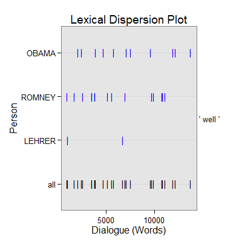

dc_well(text.var, grouping.var, n.before = 1, tot = FALSE, n.after = n.before, ord.inds = TRUE, markup = c("<<", ">>"), name = "well", ...)dc_well_begin(text.var, grouping.var, n.before = 1, tot = FALSE, n.after = n.before, ord.inds = TRUE, markup = c("<<", ">>"), name = "well", fun1, fun2 = NULL, ...)
TRUE condenses sub-units (e.g., sentences)
into turns of talk for that grouping.var.TRUE inds is ordered least to greatest.c("", "") to not mark the well discourse
markers.termco and
trans_context. The function in dc_well_begin
ensures that each has no more than n words before the "well". The defaut number
of words is 0 or less. This can be changed by supplying an argument to
n via control. For example to set the number of words to 2
use: control = list(n = 2)).termco and
trans_context. This argument in dc_well_begin
is a function (is.first_in_set) that checks to ensure
that the occurrence of well is the first sentence in that group
(grouping.var) turn of talk. The arguments sent to
is.first_in_set (regex.term & n) can be
changed via setting regex.term & n withing a list supplied to
control. For example to set the number of words to 2
use: control = list(n = 2)). To change both:
control = list(n = 1, regex.term = "Well"))termco.Returns returns a list of 2:
countsA termco object of well discourse marker counts.
wellA trans_context object of well discourse connectors in context.
dc_well - Extract well discourse connectors (a marker Schiffrin (1987)
terms a marker of response) in context.
dc_well_begin - An extension of dc_well that requires the "well" to
come at the begining of the word.
Schiffrin, D. (1987). Discourse markers. (pp. 102-127). London: Cambridge University Press.
out <- with(pres_debates2012[1:1000, ], dc_well(dialogue, person)) out[1]$counts person word.count well 1 OBAMA 6258 11(.18%) 2 ROMNEY 6733 15(.22%) 3 CROWLEY 713 0 4 LEHRER 765 2(.26%) 5 QUESTION 201 0out[2]$well =================================== Event 1: [lines 93-95] LEHRER: Do you want to repeal Dodd Frank? ** ROMNEY: <<Well>>, I would repeal and replace it. ROMNEY: We're not going to get rid of all regulation. =================================== Event 2: [lines 98-100] ROMNEY: You need transparency, you need to have leverage limits for| ** LEHRER: <<Well>>, here's a specific| ROMNEY: But let's let's mention let me mention the other one. =================================== Event 3: [lines 152-154] ROMNEY: I sure do. ** ROMNEY: <<Well>>, in part, it comes, again, from my experience. ROMNEY: You know, I was in New Hampshire. =================================== Event 4: [lines 176-178] LEHRER: Mister President, the argument against repeal? ** OBAMA: <<Well>>, four years ago, when I was running for office, I was traveling around and having those same conversations that Governor Romney talks about. OBAMA: And it wasn't just that small businesses were seeing costs skyrocket and they couldn't get affordable coverage even if they wanted to provide it to their employees. =================================== Event 5: [lines 194-196] LEHRER: Two minutes two minutes is up, sir. ** OBAMA: No, I think I had five seconds before you interrupted me, was the irony is that we've seen this model work really <<well>> in Massachusetts, because Governor Romney did a good thing, working with Democrats in the state to set up what is essentially the identical model and as a consequence people are covered there. OBAMA: It hasn't destroyed jobs. =================================== Event 6: [lines 200-202] LEHRER: Governor, tell tell the president directly why you think what he just said is wrong about Obamacare? ** ROMNEY: <<Well>>, I did with my first statement. ROMNEY: First of all, I like the way we did it in Massachusetts. =================================== Event 7: [lines 251-253] LEHRER: Let's let the governor explain what you would do| ** ROMNEY: <<Well>>| LEHRER: if Obamacare is repealed. =================================== Event 8: [lines 254-256] LEHRER: How would you replace it? ** ROMNEY: <<Well>>, actually it's it's it's a lengthy description. ROMNEY: But, number one, preexisting conditions are covered under my plan. =================================== Event 9: [lines 270-272] ROMNEY: We instead need to put insurance plans, providers, hospitals, doctors on target such that they have an incentive, as you say, performance pay, for doing an excellent job, for keeping costs down, and that's happening. ** ROMNEY: Innermountain Healthcare does it superbly <<well>>, Mayo Clinic is doing it superbly <<well>>, Cleveland Clinic, others. ROMNEY: But the right answer is not to have the federal government take over health care and start mandating to the providers across America, telling a patient and a doctor what kind of treatment they can have. =================================== Event 10: [lines 277-279] OBAMA: But let's go back to what Governor Romney indicated, that under his plan, he would be able to cover people with preexisting conditions. ** OBAMA: <<Well>>, actually Governor, that isn't what your plan does. OBAMA: What your plan does is to duplicate what's already the law, which says if you are out of health insurance for three months, then you can end up getting continuous coverage and an insurance company can't deny you if you've if it's been under ninety days. =================================== Event 11: [lines 329-331] LEHRER: Do you believe, both of you but you had the first two minutes on this, Mister President do you believe there's a fundamental difference between the two of you as to how you view the mission of the federal government? ** OBAMA: <<Well>>, I definitely think there are differences. LEHRER: And do you yeah. =================================== Event 12: [lines 353-355] LEHRER: Your view? ** ROMNEY: <<Well>>, first, I love great schools. ROMNEY: Massachusetts, our schools are ranked number one of all fifty states. =================================== Event 13: [lines 384-386] LEHRER: Does the federal government have a responsibility to improve the quality of public education in America? ** ROMNEY: <<Well>>, the primary responsibility for education is is, of course, at the state and local level. ROMNEY: But the federal government also can play a very important role. =================================== Event 14: [lines 392-394] LEHRER: How do you see the federal government's responsibility to, as I say, to improve the quality of public education in this country? ** OBAMA: <<Well>>, as I've indicated, I think that it has a significant role to play. OBAMA: Through our Race to the Top program, we've worked with Republican and Democratic governors to initiate major reforms, and they're having an impact right now. =================================== Event 15: [lines 448-450] OBAMA: You've done a great job. ** LEHRER: Oh, <<well>>, no. LEHRER: But the fact is government the role of government and governing, we've lost a pod in other words. =================================== Event 16: [lines 460-462] LEHRER: But what would you do as president? ** ROMNEY: We as president, I will sit on day one actually, the day after I get elected I'll sit down with leaders the Democratic leaders, as <<well>> as Republican leaders, and continue as we did in my state we met every Monday for a couple hours, talked about the issues and the challenges in the in the in our state in that case. ROMNEY: We have to work on a collaborative basis, not because we're going to compromise our principle, but because there's common ground. =================================== Event 17: [lines 471-473] LEHRER: Mister President? ** OBAMA: <<Well>>, first of all, I think Governor Romney's going to have a busy first day, because he's also going to repeal Obamacare, which will not be very popular among Democrats as you're sitting down with them. OBAMA: But, look, my philosophy has been, I will take ideas from anybody, Democrat or Republican, as long as they're advancing the cause of making middle class families stronger and giving ladders of opportunity to the middle class. =================================== Event 18: [lines 491-493] LEHRER: Governor Romney, you won the toss and you elected to go last, so you have a closing two minutes, Mister President. ** OBAMA: <<Well>>, Jim, I want to thank you, and I want to thank Governor Romney, because I think was a terrific debate, and I very much appreciate it. OBAMA: And I want to thank the University of Denver. =================================== Event 19: [lines 625-627] OBAMA: And let's take the money that we've been spending on war over the last decade to rebuild America, roads, bridges schools. ** OBAMA: We do those things, not only is your future going to be bright but America's future is going to bright as <<well>>. CROWLEY: Let me ask you for more immediate answer and begin with Mister Romney just quickly what what can you do? =================================== Event 20: [lines 630-632] CROWLEY: What about those long term unemployed who need a job right now? ** ROMNEY: <<Well>> what you're seeing in this country is twenty three million people struggling to find a job. ROMNEY: And a lot of them, as you say, Candy, have been out of work for a long, long, long time. =================================== Event 21: [lines 647-649] ROMNEY: And I know he keeps saying, you want to take Detroit bankrupt. ** ROMNEY: <<Well>>, the president took Detroit bankrupt. ROMNEY: You took General Motors bankrupt. =================================== Event 22: [lines 711-713] CROWLEY: Governor, on the subject of gas prices? ** ROMNEY: <<Well>>, let's look at the president's policies, all right, as opposed to the rhetoric, because we've had four years of policies being played out. ROMNEY: And the president's right in terms of the additional oil production, but none of it came on federal land. =================================== Event 23: [lines 717-719] ROMNEY: So where'd the increase come from? ** ROMNEY: <<Well>> a lot of it came from the Bakken Range in North Dakota. ROMNEY: What was his participation there? =================================== Event 24: [lines 733-735] ROMNEY: That's not the right course for America. ** ROMNEY: Let's take advantage of the energy resources we have, as <<well>> as the energy ources for the future. ROMNEY: And if we do that, if we do what I'm planning on doing, which is getting us energy independent, North America energy independence within eight years, you're going to see manufacturing jobs come back. =================================== Event 25: [lines 803-805] ROMNEY: I'm still speaking. ** OBAMA: <<Well>> | ROMNEY: And the answer is I don't believe people think that's the case| =================================== Event 26: [lines 825-827] CROWLEY: Is that true? ** OBAMA: <<Well>>, think about what the governor think about what the governor just said. OBAMA: He said when I took office, the price of gasoline was dollar one. =================================== Event 27: [lines 941-943] OBAMA: Not only that, he said, I think that's what grows the economy. ** OBAMA: <<Well>>, I fundamentally disagree with that. OBAMA: I think what grows the economy is when you get that tax credit that we put in place for your kids going to college.plot(out)
## Save externally use .doc or .txt ## print(out[[2]], file="well.doc")